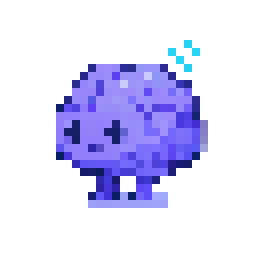
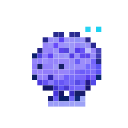

Claude remembers you. Phren remembers your work. Git-backed knowledge layer for AI agents. Findings, fragments, tasks, and sessions that persist. Private. Works with Claude Code, Copilot, Cursor, and Codex.
~/.phren, wires MCP, installs hooks. Your agents get a memory they can actually keep.
MCP, hooks, templates, git repo.
Finds your repo. Starts remembering.
Paste your remote. Memory lands.
Phren catches findings, links fragments across projects, and figures out what matters. Gets sharper the longer you use it.
Switch laptops mid-thought. Already there. Git syncs after every response, pulls on open. Your memory travels with you, not your machine.
Runs in the background. When you want to look, phren opens the shell. phren web-ui shows the full memory graph. Always an open book.
Per tool, per project, or off entirely. MCP-only mode available.
Minimal / conservative / balanced / aggressive.
180 for light. 550 default. 2000 for deep context.
TTL, confidence floor, decay curves. Pin to override.
Profiles per machine. Global, project-local, or custom path.
CLAUDE.md dumps everything every time. Phren only surfaces what matches. About 550 tokens instead of the whole file. Less noise, lower cost. Tune it with PHREN_CONTEXT_TOKEN_BUDGET.
Five agents, three machines, one phren. What one session discovers, every future session knows. Patterns solidify. Bad info fades.
Claude thinks. Phren remembers. When your agent arrives, phren already has the context ready.
Browse what it knows. Check on tasks. Review the queue. Type : for the command palette.
Run phren web-ui to open a visual map of everything it knows. Findings, connections, quality scores, and what needs your attention.
Tree view for findings, tasks, skills, and hooks. Interactive fragment graph. Search, add, review, and push. All from the sidebar.
Projects, findings, tasks, skills, hooks, sessions. All browsable.
Interactive webview. Click nodes, explore connections, edit findings in-graph.
Search phren's knowledge base without leaving your editor.
MCP tools handle search, capture, review, and sync. Skills are shortcuts for larger jobs. Optional. Drop new ones in ~/.phren/global/skills/.
~/.phren/global/skills/ and phren picks them up on next init.MCP and hooks. Same memory, same findings, no matter which tool you're in.
No API calls to retrieve your memory. No cloud. No third party. Findings tagged with sessions, linked to tasks, tracked by trust scores. Memory in your custody. Where it belongs.
